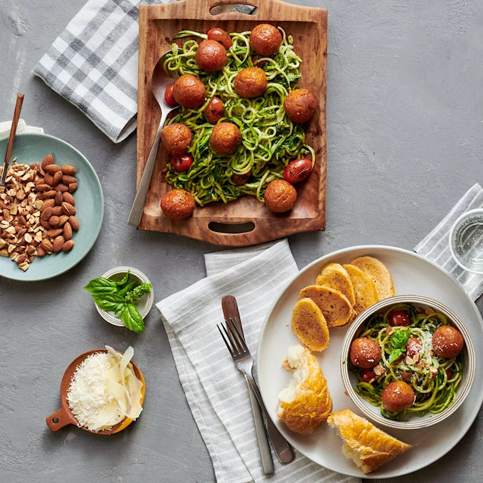

Zoodles with Plant-Based Meatballs

Description
Here is our second recipe of the week! Zucchini noodles with plant-based Meatballs!
Or as we call, zoodles! It's low calorie, it's gluten free, it's plant-based, it's the superhero of your dinner parties!
Before we get into the recipe and ingredients, we would like to thank to Pure Farmland for amazing plant-based meatballs!
Ingredients
Please note: This recipe is for 6 servings
- 1 tablespoon olive oil
- 1 pound Pure Farmland® Plant-Based Homestyle Meatballs
- 2 teaspoons olive oil, divided
- ¾ cup grape tomatoes (10-12 tomatoes)
- 1 teaspoon salt, divided
- 2 large green zucchini, spiralized (about 1.5 lbs, before spiralized)
- ⅓ cup prepared basil pesto
- ¼ cup roasted almonds, roughly chopped
- 1 tablespoon Grated Parmesan cheese for serving
Steps
- Heat a large (12-inch) nonstick skillet over medium-high heat. Add 1 tablespoon olive oil, then the meatballs. Cook, turning frequently, until even golden brown and heated through the center, 8 to 10 minutes total. Remove from skillet to a paper towel-lined plate. Once skillet is cool enough to handle, wipe clean with paper towel.
- Return skillet to medium heat. Add 1 teaspoon olive oil, tomatoes, and 1/2 teaspoon salt. Cook for 2 to 3 minutes, until slightly golden and just tender (but not burst). Remove to a plate.
- Add the remaining 1 teaspoon olive oil, then zucchini noodles. Season with remaining 1/2 teaspoon salt and stir very gently to combine. Cook, stirring occasionally, for about 3 minutes or until zoodles are slightly tender. Add the pesto and stir gently to combine.
- Transfer to a large serving platter and top with meatballs, tomatoes, roasted almonds, and Parmesan cheese, if desired. Serve immediately.
- And voila! Our finger-licking delicious zoodles are ready! Enjoy!
Homepage